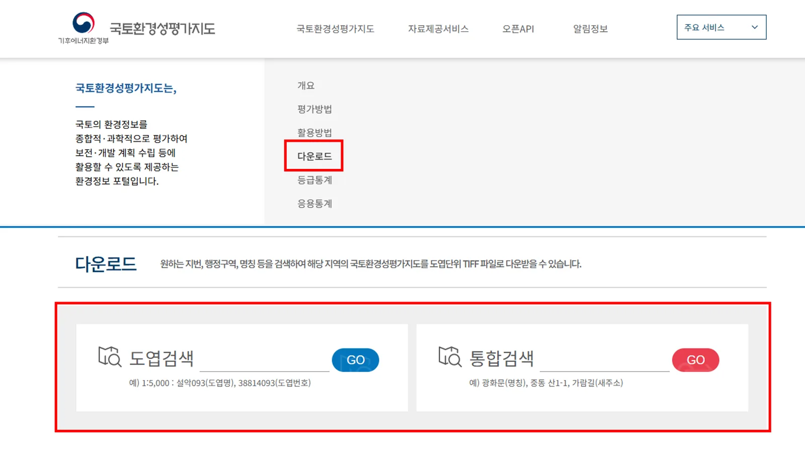
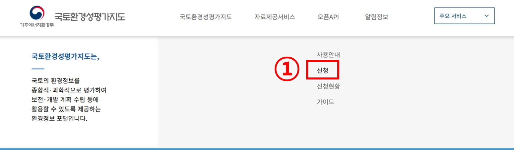
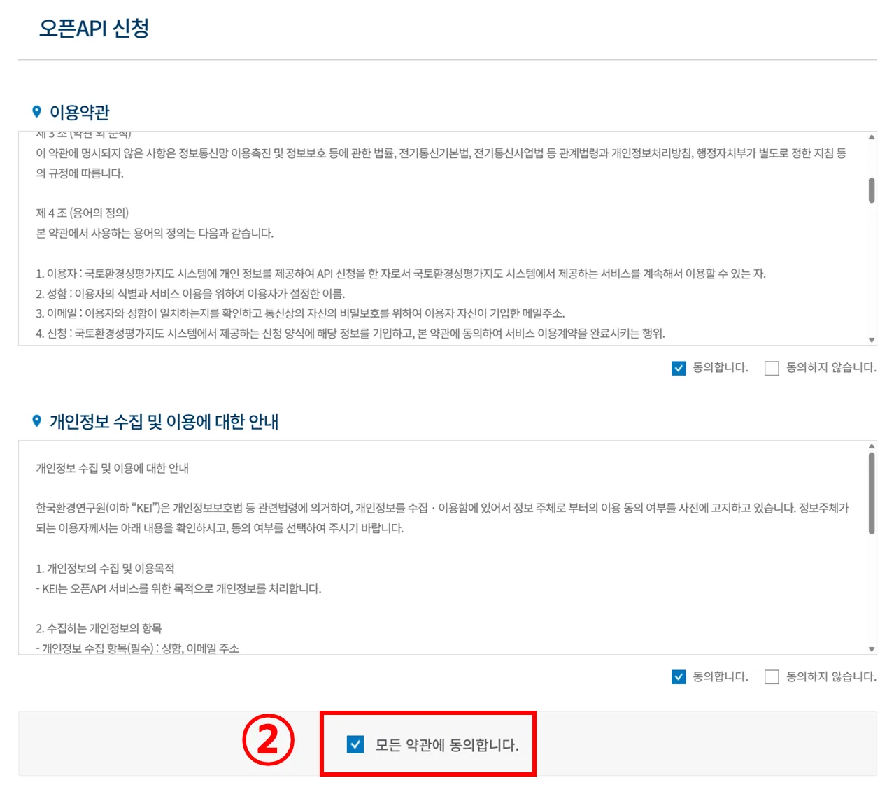
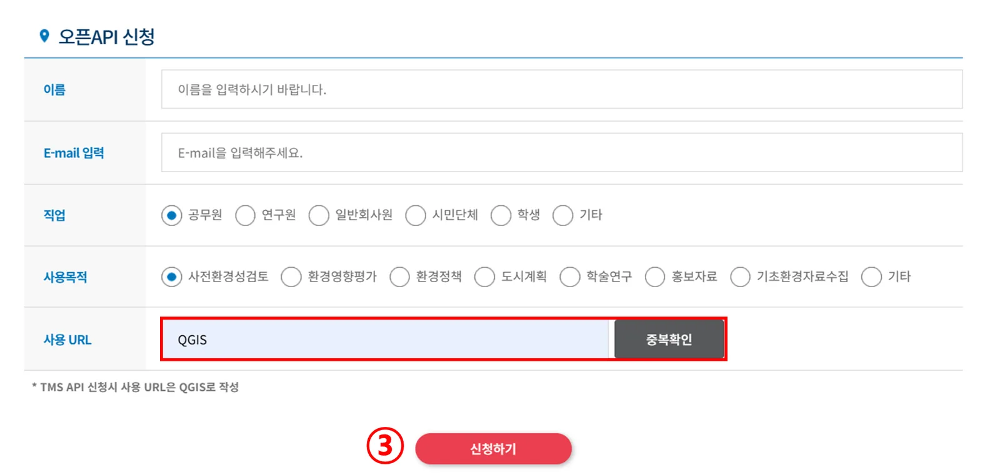
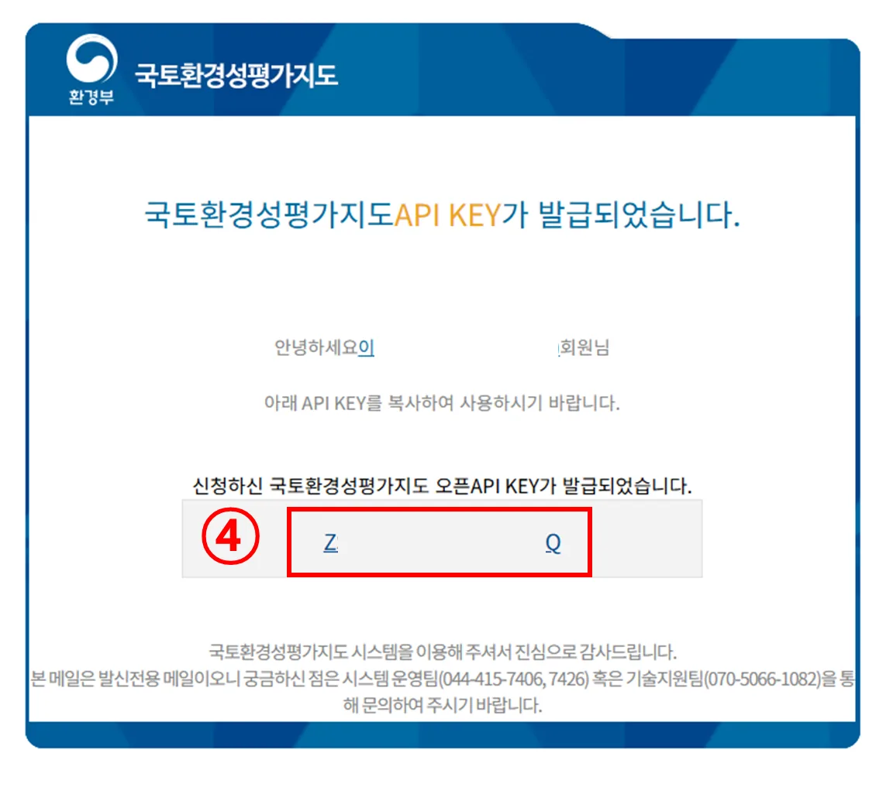
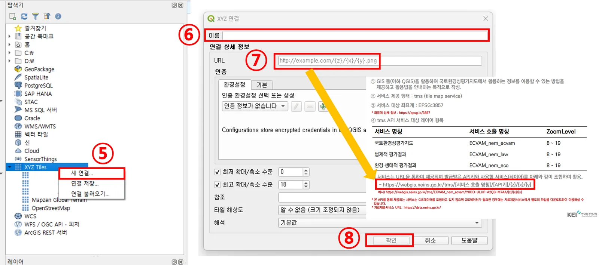
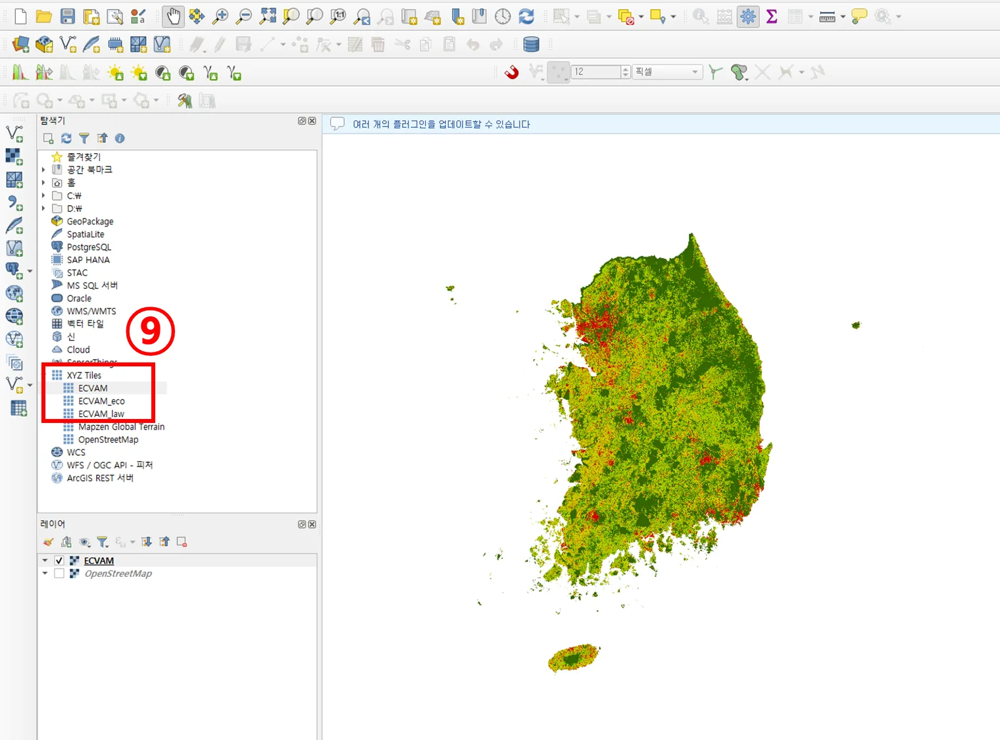

공간정보 원본 데이터 다운로드
- 홈페이지 → 다운로드 메뉴로 이동
- 도엽명, 도엽번호, 지번, 행정구역 중 하나로 검색
- GO 클릭
- 파일 형식 : GeoTIFF
- 좌표계 : EPSG:5186


GeoTIFF 원본 데이터 다운로드, Open API로 QGIS 연동, 등급 데이터를 활용한 공간 분석 방법입니다.

QGIS에서 국토환경성평가지도를 불러오는 방법 (API KEY 발급 → QGIS 연결)





